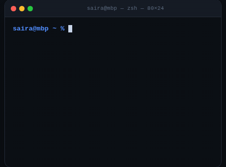

Search YouTube
Search, filter and pick videos without ever leaving Premiere — results come back with thumbnails, durations and channel names.
Open Source • MIT License • For Premiere Pro & After Effects • macOS · CEP 10
MediaOtter is a free desktop extension that searches YouTube, pastes any link, and imports MP4 or WAV straight into your Premiere Pro and After Effects timeline. No browser. No exports. No accounts.

curl -fsSL https://mediaotter.madebysaira.me/install.sh | sh
The one-liner detects your chip (Apple Silicon or Intel), downloads the right build, and installs it into the Adobe CEP extensions folder. Then restart Premiere Pro / After Effects and open Window → Extensions → MediaOtter.


Features • What it does
Search, filter and pick videos without ever leaving Premiere — results come back with thumbnails, durations and channel names.
1000+ extractors under the hood: Twitch, Vimeo, Instagram, X, SoundCloud and more. Paste a URL, get a file.
Set a start and end time and grab only the B-roll you actually need — no more downloading then cutting.
One click imports the finished MP4 or WAV into a dedicated MediaOtter bin, ready to drop on your sequence.
Percent, speed, ETA and size for every download. Pause, resume and cancel from inside the panel.
Export clean PCM audio for editing, or MP4 video — whatever your cut needs, at the quality your editor expects.
Screenshots • The extension
Every screen of MediaOtter — dark, focused, and built for the panel space Adobe gives you.


Demo • How it works
That's the whole workflow — no browser round-trip, no export dialogs, no file hunting.

Install • One line
curl -fsSL https://mediaotter.madebysaira.me/install.sh | sh

Prefer a zip? Grab the build for your chip from the GitHub release page and drop it into ~/Library/Application Support/Adobe/CEP/extensions/.
Quit and reopen Premiere Pro or After Effects, then open Window → Extensions → MediaOtter. First launch signs you into YouTube once, securely, on your Mac.
Open Source • Free forever
MIT licensed. No accounts, no telemetry, no servers — everything runs on your Mac. Read the source, fork it, ship your own build.